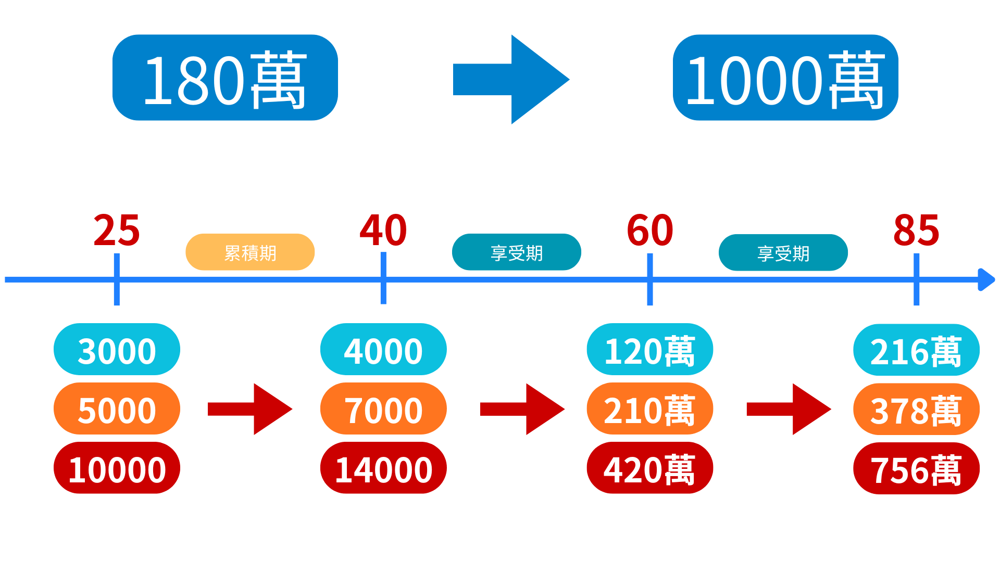
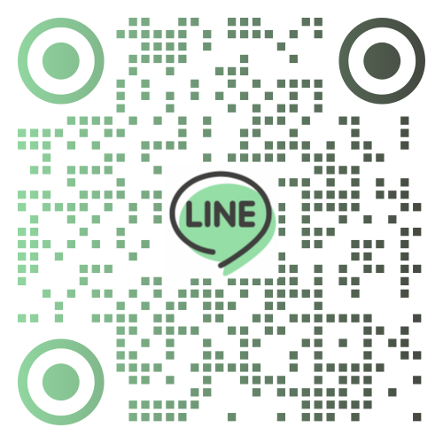
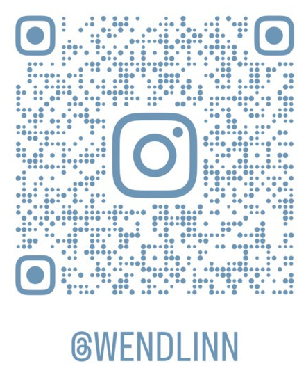

呈祥保險經紀人股份有限公司
確定的持續提撥定期定額
專業人士策略建議
提高目標達成率
KJTC
理財教練陪跑計劃 推廣表

01
關於目前的財務狀況，您最希望改善哪一個部分？
（可複選）
每月記帳還是存不到錢
有存一筆錢，但只知道放銀行不知道能投哪裡
平時太忙，沒時間研究股票和市場
有在做投資，但對投資市場不夠了解
已加入投資市場多年，但會想知道還能怎麼規劃去放大資產
02
目前您最常用的投資或儲蓄工具是哪些呢？
（可複選）
銀行定存/活存
股票/ETF
儲蓄型保險/投資型保單
外幣/基金
尚未開始投資
03
如果現在有一筆額外的預算，您最想優先達成什麼人生目標？
（單選）
加速存到第一桶金
買車/買房
存結婚基金
每個月出國旅行
買奢侈品
打造退休後的每個月被動收入
04
在選擇理財工具時，您最看重哪一個特點？
（單選）
安全第一
絕對不能虧損，資產要穩健成長。
平衡發展
可以承受一點點波動，但要有打敗通膨的報酬率。
省時省心
不用每天看盤，交給專業機制自動運作。
05
您是否認同理財教練陪跑計劃？
（單選）
是
否
06
您最喜歡理財陪跑教練計劃的哪個核心理念？
（單選）
定期定額的投入
有專業人士建議
提高目標達成率
07
完成上述，您理想中的每月被動收入是多少？
（單選）
$4,000 / 月
$7,000 / 月
$14,000 / 月
$20,000 / 月
$20000 以上 / 月

點擊加入 LINE 官方

點擊追蹤 Instagram
📋 填寫基本聯絡資料
客戶姓名
手機號碼
確認送出問卷